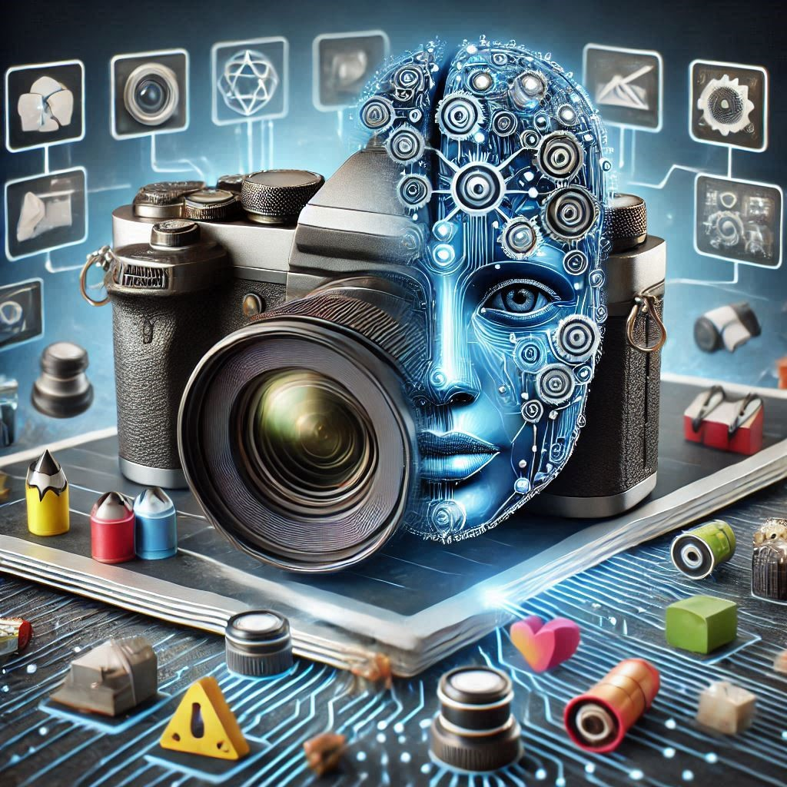

General Information About This Website
The purpose of this website is to help you better understand the concept of artificial intelligence in learning and photography, as well as the proper use of applications such as ChatGPT, Mentimeter, CapCut, and Microsoft Designer. These applications are available for free, and our goal is to guide you in using them effectively to help you accomplish tasks or projects you desire.
You will find complete courses with detailed information tailored to specific applications and the areas in which you wish to use them. Video tutorials with step-by-step explanations and demonstrations are also available. To make it easier to choose the section that suits you best, the courses are divided into two age categories: under and over 14 years old, ensuring that tutorials and projects are understandable and relevant based on your age group.
Explore, test, and learn about artificial intelligence in learning and photography with the help of this website!
Under 14 Category
For younger users, the internet offers many learning and information opportunities, which can sometimes be challenging to understand. The reason this website includes a category for users under 14 is to provide accessible information in an easy-to-understand format, giving younger users the chance to create projects and complete assignments using various applications, all from a single source.
This section includes detailed tutorials and the opportunity to work independently while unleashing your creativity.
Applications you will learn to use in this category include: Mentimeter for learning and Microsoft Designer for photography.
Over 14 Category
Starting at the age of 14, users generally have more experience in independently searching and researching information online. However, having all necessary information in one place can still be a great help. This website provides an opportunity for older users to learn and work without additional searches, streamlining their experience.
We invite you to take advantage of these courses and enjoy the learning process.
Applications you will learn to use in this category include: ChatGPT for interview questions and learning, and CapCut for photography.

"AI transforms learning and photography, helping us see and create beyond human limits."
— Inspired by Fei-Fei Li